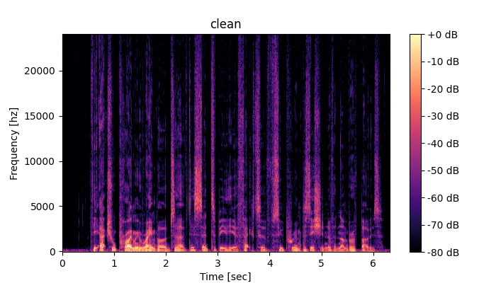
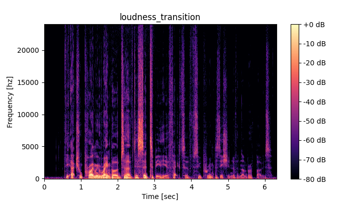
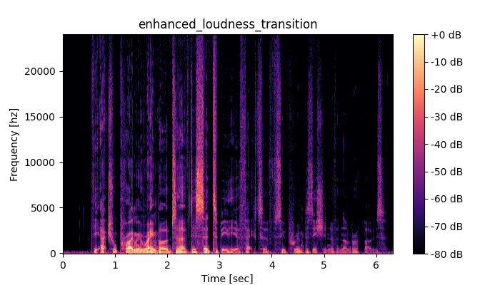
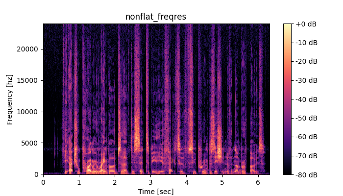
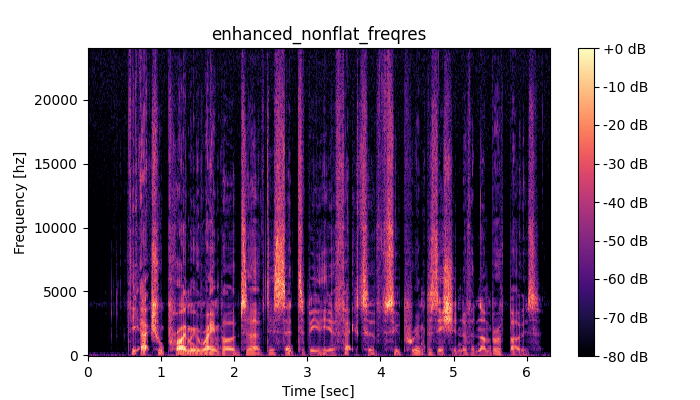
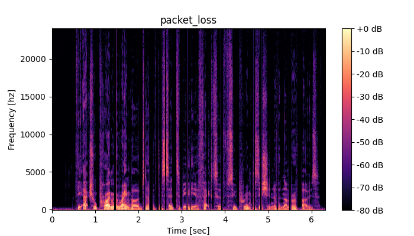
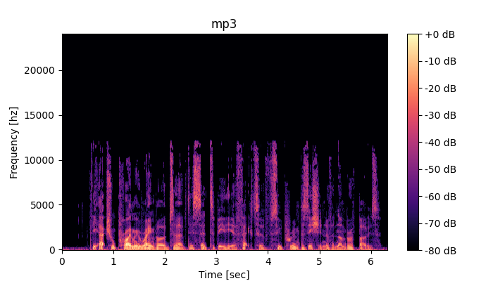
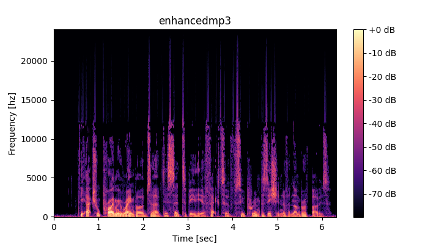
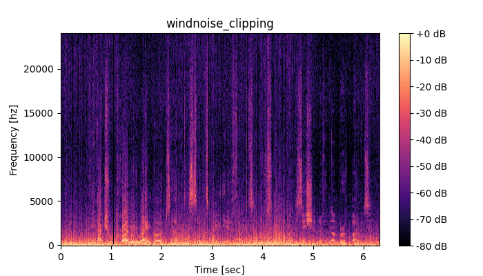
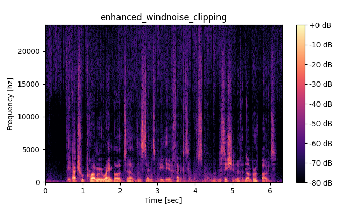

Abstract: This page provides some audio examples of speech distortions we focus on in the ICASSP2025 URGENT Challenge. Each example has clean speech, distorted speech, and enhanced speech. The enhanced speech is obtained using the baseline model trained for the "URGENT Challenge 2024", which did not see disrotions considered in the URGENT ICASSP2025 challenge. Unfortunately, the model does not generalize well for unseen distortions. This motivates us to organize the ICASSP2025 URGENT Challenge, which considers more diverse types of distortions and to aims to build a more universal, robust, and generalizable speech enhancement model.
Contents:
Audio examples of loudness transition
Audio examples of non-flat frequency response
Audio examples of packet loss
Audio examples of codec lossy compression
Audio examples of wind noise
Loudness transition
Loudness transition naturally happens when people speak. The volume of their voice changes based on emotions or points of emphasis. In addition, each person has a unique speaking style, which can also affect loudness transitions. For instance, some people naturally lower their voice at the end of sentences.
In the following example, the speaker emphasizes his speech at the middle while lower the volume at the end of utterance, which makes it difficult to hear. Enhancement model just outputs the input as it is since the model is not trained for controlling the gain.
| Clean speech  |
Speech with loudness transition  |
Enhanced speech  |
Non-flat frequency response
Frequency responce can sometimes be non-flat due to speaker or microphone characteristics.
In the following example, we simulated the non-flat frequency response assuming that the microphone has low responce for low frequencies and a peaky responce around 4000Hz, which significantly changes the speech.
| Clean speech |
Speech distorted by non-flat frequency response  |
Enhanced speech  |
Packet loss
Packet loss can happen in the online meeting systems due to the busy network traffic. When packet loss happens, the audio becomes choppy. We want to restore the lost speech using a speech enhancement model.
| Clean speech |
Speech with packet losses  |
Enhanced speech |
Codec lossy compression (MP3)
Some audio codecs are lossy compression, and some components in the original audio are lost, as you can see in the example below, We want to restore the lost part using a speech enhancement model.
| Clean speech |
Speech distorted by codec lossy compression  |
Enhanced speech  |
Wind noise
Wind noise is non-stational noise and behaves turbulently near microphones. Wind noise distorts sound in a non-linear way because the airflow moves the microphone membrane and causes saturation at high noise levels.
In the following example, enhancement model generalizes to unseen wind noise to some extent, but still there is room for improvment.
| Clean speech |
Speech with wind noise  |
Speech with wind noise  |